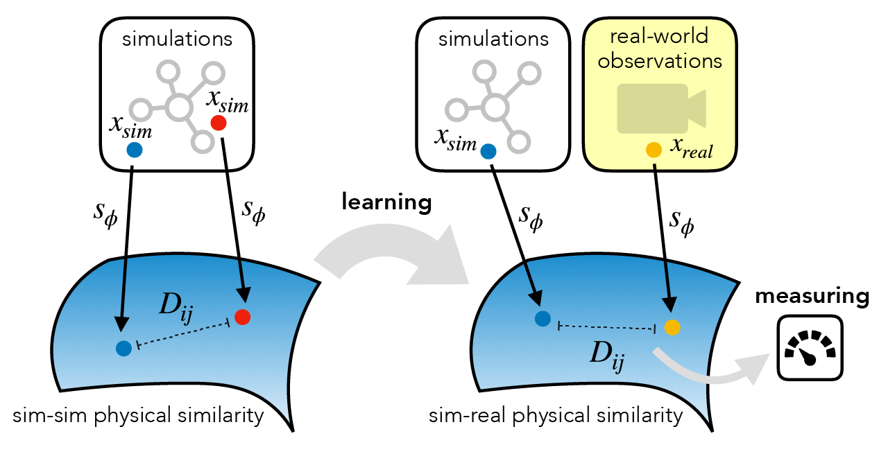
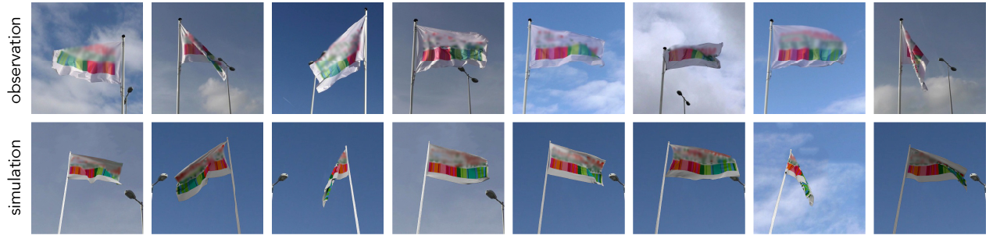

Abstract
For many of the physical phenomena around us, we have developed sophisticated models explaining their behavior. Nevertheless, measuring physical properties from visual observations is challenging due to the high number of causally underlying physical parameters -- including material properties and external forces. In this paper (CVPR 2020), we propose to measure latent physical properties for cloth in the wind without ever having seen a real example before. Our solution is an iterative refinement procedure with simulation at its core. The algorithm gradually updates the physical model parameters by running a simulation of the observed phenomenon and comparing the current simulation to a real-world observation. The correspondence is measured using an embedding function that maps physically similar examples to nearby points. We consider a case study of cloth in the wind, with curling flags as our leading example -- a seemingly simple phenomena but physically highly involved. Based on the physics of cloth and its visual manifestation, we propose an instantiation of the embedding function. For this mapping, modeled as a deep network, we introduce a spectral layer that decomposes a video volume into its temporal spectral power and corresponding frequencies. Our experiments demonstrate that the proposed method compares favorably to prior work on the task of measuring cloth material properties and external wind force from a real-world video.



Flags Dataset
To evaluate our method's ability to infer physical parameters from real-world observations, we have set out to collect video recordings of real-world flags with ground-truth wind speed. We used two anemometers to measure the wind speed at the flag's position. After calibration and verification of the meters, we hoisted one of them in the flagpole to the center height of the flag to ensure accurate and local measurements. In total, we have acquired more than an hour of video over the course of 5 days in varying wind and weather conditions. We divide the dataset in 2.7K train and 1.3K non-overlapping test video clips and use 1-minute average wind speeds as ground-truth. The train and test video clips are recorded on different days with varying weather conditions. Examples of the videos are displayed in the figure below.
Citation
Runia, T.F.H., Gavrilyuk, K., Snoek, C.G.M., & Smeulders, A.W.M. (2020). Cloth in the Wind: A Case Study of Estimating Physical Measurement through Simulation.Bibtex format:
@InProceedings{runia2020cloth,
title = {Cloth in the Wind: A Case Study of Estimating Physical Measurement through Simulation},
author = {Runia, Tom F H and Gavrilyuk, Kirill and Snoek, Cees G M and Smeulders, Arnold W M},
booktitle = {The IEEE Conference on Computer Vision and Pattern Recognition (CVPR)},
month = {June},
year = {2020}
}